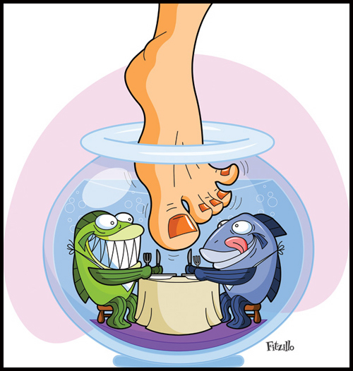

Такая услуга, как педикюр, является одной из самых востребованных на сегодняшний день, особенно в период отпусков. Не секрет, что педикюр можно делать и в домашних условиях, но для того, чтобы процедура была максимально безопасной и эффективной, лучше довериться профессионалам!
Комбинированный аппаратный педикюр включает элементы классического и аппаратного педикюра, имеет множество преимуществ и является одним из самый популярных среди девушек.

Аппаратный педикюр
Это механическая процедура по уходу за ногтями на пальцах ног,а также за кожей стопы. Главная особенность и ее отличие от классического педикюра в том, что здесь не используется вода и средства для размягчения кожи – все выполняется аппаратом.
Медицинский педикюр - это профессиональный аппаратный педикюр, который проводится в качестве
лечебной процедуры если имеется грибок ногтей, вросший ноготь и другие патологии, связанные с проблемами стоп. Данную процедуру не следует путать с обычным педикюром, направленным лишь на уход за состоянием стоп. Медицинский аппаратный педикюр может выполнятся только профессионально подготовленным мастером - подологом.
SMART техника подразумевает использование инновационных плоских насадок, мягко воздействующих на кожу. Диск не нагревается в отличие от колпачков, а поэтому клиент не ощущает жгучих ощущений. Наклейки выполнены из карбида кремния, а колпачки - из оксида алюминия и могут провоцировать раздражения.
Бразильский педикюр - Это гигиеничный продукт, показывающий волшебный результат!Представляет собой индивидуальный набор для каждого клиента, в который входит одноразовая пилочка с палочкой, комплект перчаток с кремом. Крем содержит масло чайного дерева, которое известно как антибактериальное, противовоспалительное, ранозаживляющее, противогрибковое средство. А так же содержит вытяжку из цветка гамамелиса, кальций, витамины. Крем отбеливает ногтевую пластину, укрепляет ногти, отшелушивает омертвевшие клетки кожи. Завершающая стадия — массаж рук.
Прейскурант педикюрного кабинета
| Педикюр |
Цена
|
| Педикюрtd>
| 1300 |
| Педикюр |
1800 |
| Педикюр |
1700 |
| Педикюр |
1000 |
| Педикюр |
1800 |
| Педикюр |
300 |
| Педикюр |
400 |
| Педикюр |
800 |
| Педикюр |
100/200/300 |
| Педикюр |
300 |
| Педикюр |
300 |
| Педикюр |
200 |
| Педикюр |
30 |
| Педикюр |
600 |
|
Все виды педикюра выполняются с
использованием одноразовых средств. Любой вид педикюра вы можете совместить с
услугами парикмахерского зала или косметологии.
|